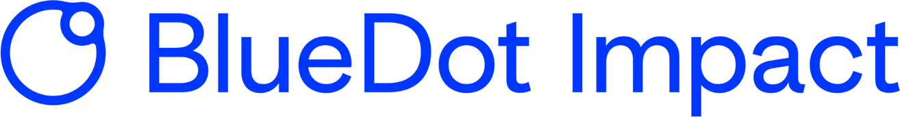
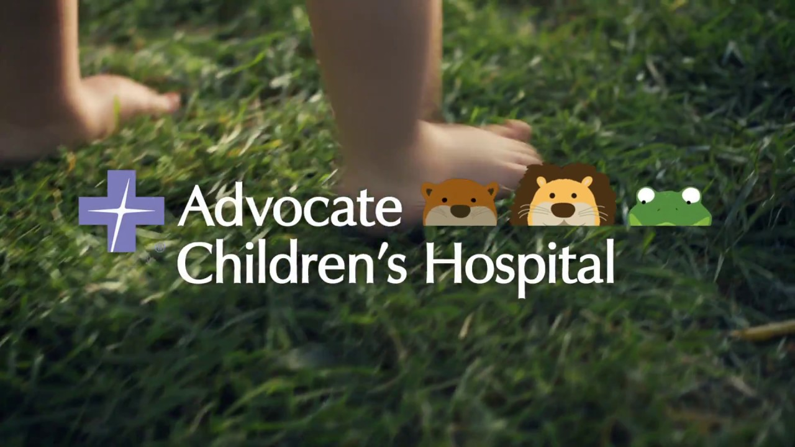
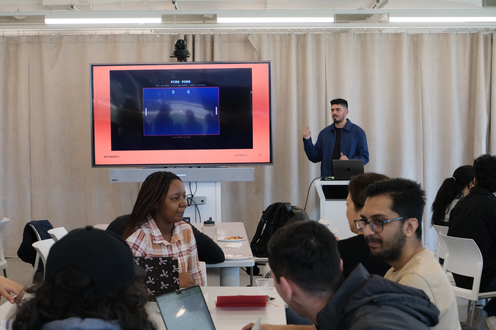
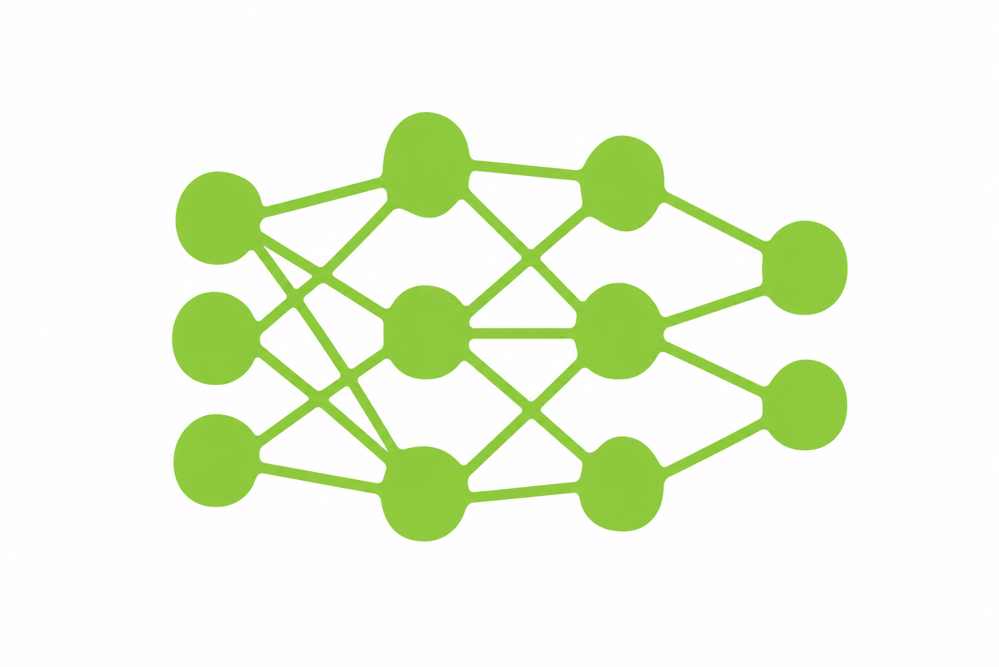
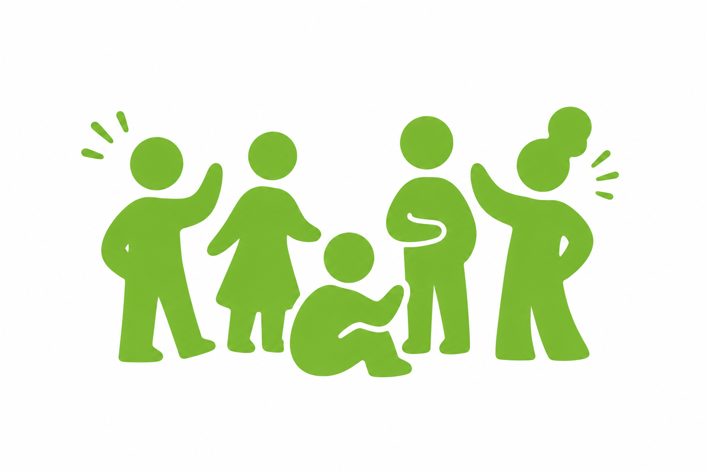

The Mechanistic Informed Audit Standard

A governance intervention proposal developed with BlueDot Impact, arguing that AI safety evaluation fails because it measures behavior without interrogating the mechanisms underneath.
Based in Chicago, IL

A governance intervention proposal developed with BlueDot Impact, arguing that AI safety evaluation fails because it measures behavior without interrogating the mechanisms underneath.
Most research tools assume students already know how to read critically. ResearchBridge uses AI to help first-gen students interrogate assumptions, representation gaps, and framing in academic literature.
Led technical program management and customer success for the HLS emerging technology team, delivering custom Teams and Copilot applications that helped organizations operationalize interoperability at scale.
Most AI tools optimize for speed. DecisionCoach optimizes for quality: a turn-based coaching system that scaffolds reasoning, surfaces blind spots, and measurably improves decisions in high-stakes contexts.
Designed and built a bilingual AR nature education experience anchored to a community mural in Southwest Chicago, using participatory design methods to give residents authorship over their own spatial narrative.
Designed and conducted a mixed-methods study examining how interaction structure influences the way people build, recall, and transfer spatial understanding through collaboration.
Ongoing research studying how demographic identity and clinical context shape model behavior in ways standard health AI benchmarks fail to detect.
On-site research and interpretation supporting the redesign of patient communication materials for Black and Latinx communities experiencing a decline in well-child visit rates.

Founded a 500+ member organization in partnership with Anthropic, building AI literacy and workforce readiness among students, functioning as both a community of practice and a live research site for studying AI skill adoption.

A research and facilitation initiative exploring how students, clinicians, and administrators across Northwestern Medicine understand, adopt, and relate to AI in healthcare contexts.
A design zine examining the invisible labor of Global South data annotators and the human cost embedded in every AI system. It argues that AI equity begins not with the model but with the people who make it possible to train one.
Built with the Gage Park Latinx Council, this bilingual AR nature education experience uses triggers anchored to a community mural. It gives residents authorship over their own spatial narrative.

I study how demographic identity gets encoded and distorted in ways behavioral benchmarks never catch.
I design tools that help augment people’s ability make better decisions with AI, not just automate faster ones.

I build with communities that existing systems were never designed to serve.